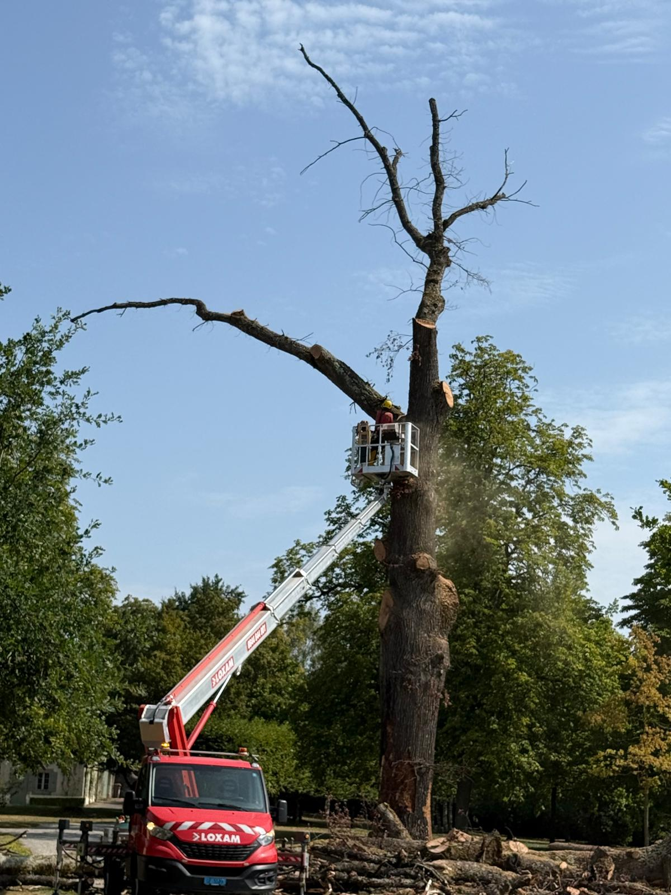

Mise en sécurité immédiate des lieux
Votre sécurité d'abord. Nous balisons le périmètre, éloignons les passants et neutralisons les risques immédiats avant toute autre opération.
- Balisage du périmètre : protection des personnes et des biens autour de l'arbre.
- Évacuation des débris : mise en sécurité des branches tombées sur un toit, une clôture ou un véhicule.
- Photographie de la situation : constat des dommages pour votre assurance.
